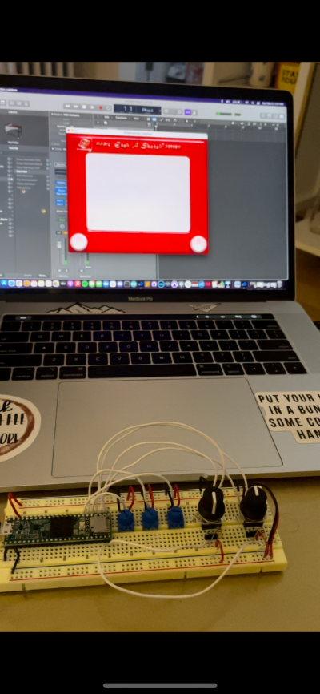

Musical Etch-A-Sketch
In my digital electronics class last semester, I made a musical Etch-A-Sketch program using Teensyduino and Processing. The Musical Etch-A-Sketch takes the design of an Etch-A-Sketch and adds midi to it. The Physical part of the project is a breadboard with two Rotary Encoders (knobs that can turn forever) that also act as two buttons when you press down on the knobs. There are also three potentiometers (knobs that spin to a certain point and stop) that allow the user to change the red, green, and blue (RGB) values to manually change the color of the line drawing. The left knob allows the user to draw left or right but turning the knob counterclockwise or clockwise respectively. The right knob allows the user to draw up or down again by turning the knob clockwise or counterclockwise respectively. When the left knob is pressed down, it resets the drawing as well as the midi note back to its starting position in the middle of the screen and at middle C for the midi note. The button in the right knob allows the user to switch between a rainbow line and manually changing the RGB values with the potentiometers.
